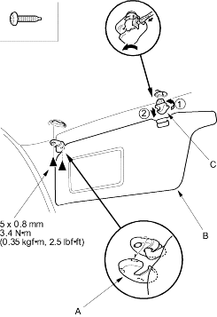
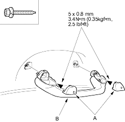
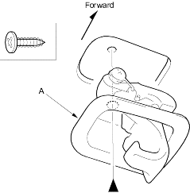

- When prying with a flat-tip screwdriver, wrap it with protective tape to prevent damage.
- Take care not to bend and scratch the headliner.
- Be careful not to damage the dashboard and other interior trim.
- Remove these items:
- Front-pillar trim, both sides (see page 20-34)
- Centre-pillar trim, both sides (see page 20-34)
- Centre-pillar upper trim, one side (see page 20-34)
- Rear view mirror, refer to the '01 CIVIC Shop Manual, P/N 62S5A00 on this CD (see page 20-36).
- Spotlights/ceiling light, with sunroof, refer to the '01 CIVIC Shop Manual, P/N 62S5A00 on this CD (see page 22-137).
- Spotlights, without sunroof, refer to the '01 CIVIC Shop Manual, P/N 62S5A00 on this CD (see page 22-138).
- Ceiling light, refer to the '01 CIVIC Shop Manual, P/N 62S5A00 on this CD (see page 22-138).
- From both sides, remove the caps (A) and remove the self-tapping ET screws, then remove the sunvisor (B) and holder (C).
Fastener Locations
 : Screw, 4
: Screw, 4

- On front passenger's side: Lower the grab handle, then remove the caps (A). Remove the self-tapping ET screws, then remove the grab handle (B).
Fastener Locations
: Screw, 6

- On left rear passenger's side: Remove the screw, then remove the coat hanger (A).
Fastener Locations
: Screw, 1
